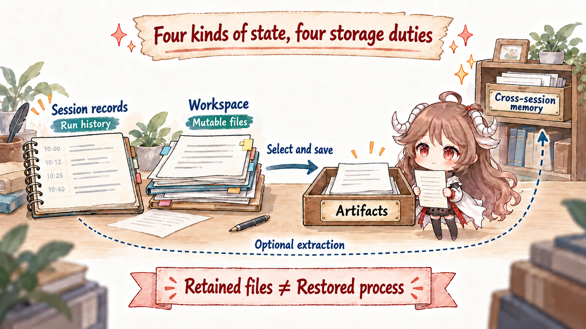

1. One script task, two Runtimes
Imagine a routine request: "Make the data-cleaning script accept a region field, run the checks, and send me the
result." Before calling the product a Coding Agent or a General Agent, watch how the task actually happens.
In the first setting, the agent starts in an open repository. It knows the current directory, reads source files and project rules, edits files, runs tests, and leaves the diff, exit codes, and test output in that workspace. When the user returns tomorrow, the files and Git state will usually still exist. Whether yesterday's background process, unfinished tool call, and model session still exist are three separate questions.
In the second setting, the user uploads an archive. The service creates a task and session, allocates a sandbox, and restores the inputs into a workspace. The agent can still edit files and run commands, but both the worker and sandbox may be reclaimed. The final report must leave that temporary worksite and become an Artifact associated with a user or Task, Session, and version. A later request cannot continue by hoping that a directory happens to remain on the same machine.
Keep the two axes separate. General / Coding describes which working object the product centers. Local / Cloud describes where execution happens and whether durable state lives on the user's machine or in a service. They are not rungs on one ladder from "basic" to "advanced."
This chapter follows the same script task and answers five questions:
- What does it actually mean for the workspace to be first-class?
- Why does code execution alone not make a Coding Agent?
- Why must a cloud runtime separate sandbox, workspace, and durable storage?
- What belongs to the session, artifact, memory, and filesystem?
- Where does recovery stop in local and cloud environments?
Source scope. The chapter uses Pi's coding harness, AgentScope's service example, Agno's AgentOS, and the public Session, CodeExecutor, Workspace, Artifact, and Memory behavior in tRPC-Agent-Go. The two-axis model and "worksite" vocabulary are a cross-framework comparison method. They do not claim undisclosed container internals, storage topology, scheduling policy, or retention periods for any product.
2. First-class does not mean “Bash is on the Tool list”
If an agent exposes read_file and bash, we only know that the model may request those actions.
"First-class" is a stronger runtime contract: the runtime recognizes the object on which those actions operate and owns its
lifecycle rather than merely exposing an operation.
For this script task, a first-class workspace must answer at least five things:
- Identity: which repository, branch, task, or workspace this is, rather than an arbitrary path string.
- Operations: reads, search, patches, shell, tests, and Git all act on the same worksite.
- Restrictions: which paths, commands, network, and Secrets are available, and which actions need approval.
- Results: file changes, exit codes, test reports, and generated outputs remain observable and attached to this Run.
- Recovery: after a process or client leaves, the runtime knows what can be loaded again and what is gone.
| Merely having a tool | Making the object first-class | Where the difference appears |
|---|---|---|
bash(command) |
Bind commands to workspace, permissions, environment, cancellation, and result records | After failure, can we tell where it ran and what it changed? |
write_file(path) |
The file belongs to a repository or task workspace and can produce a diff | Does the next turn see the same state or an empty directory on another worker? |
| Return a download link | The Artifact is associated with a user or Task and has a version, media type, and lifecycle | After the link expires, can the service find the result by task or session? |
| Write a few sentences to a database | Memory has user scope, update, deletion, retrieval, and adoption rules | How are stale facts corrected and tenants kept apart? |
A general-purpose agent can complete coding work after gaining a code interpreter. A coding agent can use files and shell to write reports, clean data, and build presentations. Capability is therefore a weak dividing line. A more stable question is: which object organizes context, permissions, outputs, and recovery by default?
3. Separate task orientation from deployment
3.1 Coding / General: which working object is at the center?
A coding-oriented agent usually centers a project or repository. Model context actively absorbs project instructions, file structure, and the current diff. Tool results naturally become file edits, command output, and test evidence. Completion often means "the patch is correct, the tests pass, and the change is reviewable."
A general-purpose agent more often centers a user task, session, or business record. A file may be input material and code execution may be only one way to process it. The final result might be an answer, spreadsheet, report, CRM update, or approval record. User identity, business authorization, cross-channel sessions, and artifact delivery become more prominent.
3.2 Local / Cloud: where do execution and durable state live?
Local does not mean "CLI only," and cloud does not mean "no filesystem." The question is where the authoritative worksite lives. A local runtime usually borrows directories, processes, credentials, and OS identity from the user's machine. A cloud runtime allocates workers or sandboxes and moves state that must outlive a worker to an external owner.
The two axes produce four valid quadrants:
| Form | Worksite | Common first-class objects | Primary engineering pressure |
|---|---|---|---|
| Local coding agent | Repository on the user's machine | cwd, files, Git, shell, tests | Project trust, permissions, environment pollution, reviewable patches |
| Cloud coding agent | Remote repository workspace or managed dev environment | Task, repository snapshot, patch, build/test artifact | Environment reconstruction, secrets, network policy, concurrency, cost |
| Local general-purpose agent | Personal device and desktop applications | User files, desktop tools, personal context | Device permissions, privacy, cross-application side effects |
| Cloud general-purpose agent | Multi-tenant service plus temporary or managed sandbox | User, session, task, artifact, business tool | Tenant isolation, recovery, quota, audit, long-lived state |
These are not four mutually exclusive product boxes. A cloud control plane may send selected commands to a local executor, and a local client may lease a remote sandbox. In a hybrid architecture, labeling the whole product matters less than naming the owner of each workspace, execution permission, durable record, and final side effect.
4. Why a local Coding Harness naturally centers the Workspace
Pi provides a clean local reference. It separates model integration, the agent loop, the coding harness, and terminal UI into four packages. The reusable core owns models, tool calls, and events. The coding-agent layer then assembles read, write, edit, bash, resources, a session tree, and compaction. Workspace behavior is therefore not supplied by a provider API; it is an explicit product runtime responsibility.
A local trace of the script task reveals which objects are naturally stable:
Task C-17: add region field
worksite = repository / branch
read schema.py
edit cleaner.py
bash pytest -q
-> exit 1: missing fixture
edit test_cleaner.py
bash pytest -q
-> exit 0
observable result = files + diff + test output
The session ledger and the disk are still different things. Pi's SessionManager stores messages, tool results,
model changes, branches, and compaction entries in an append-only JSONL tree. The current leaf determines which conversational
path is rebuilt. Its
context reconstruction
can recover model-visible history, but it does not roll the repository back to an earlier leaf. Testing another code state still
requires a Git branch, worktree, or sandbox.
Security also inherits the worksite. Pi's project trust controls whether project settings, extensions, skills, and prompts are loaded, but its security documentation explicitly says that trust is not a sandbox. Without another gate, files and commands inherit the operating-system permissions of the launching process. A local runtime gains a rich environment and also makes the user's machine the real blast radius.
Files remaining on local disk prove only that some files remain. They do not prove that an old shell process is alive, an external API was not called twice, the session can be replayed, or the model can explain every existing modification.
5. Why a Cloud Runtime stores worksite state separately
A cloud service cannot assume that the next request reaches the same process. "One directory" therefore becomes several contracts: task/session stores run identity, the sandbox supplies the current execution environment, the workspace carries mutable files, the artifact store keeps delivered results, and the memory store keeps knowledge intended for later retrieval.
5.1 Create Run identity before leasing execution
A typical service path first normalizes the user request into an identified run, then prepares a sandbox for steps that need code execution. The following is a shape-level path, not a private product schema:
request
{user_id, task_id, session_id, input_refs}
service plane
-> authorize tenant and tool policy
-> lease sandbox
-> restore task workspace
-> run agent loop and stream events
-> promote selected outputs to artifacts
-> persist run/session state
-> release or snapshot sandbox"Promote selected outputs" is the decisive step. Caches, dependencies, partial files, and logs in a temporary directory do not all become permanent assets when the task ends. The application must choose which files leave the worksite with an owner, version, and media type.
5.2 A service layer supports many users and reconnection, but names do not prove recovery
AgentScope's service example wires create_app, RedisStorage, a message bus,
LocalWorkspaceManager, MCP, and subagent templates together.
That assembly path
proves that service, storage, and workspace are considered. Seeing RedisStorage alone still does not prove that
pending tool state, event cursors, and workspace snapshots support cross-process recovery.
Agno exposes more of the platform responsibility. AgentOS assembles agents, teams, workflows, a database,
authorization, registry, scheduler, tracing, and interfaces. Initialization can inject an OS-level database/checkpoint and
enable event storage. See
AgentOS.__init__
and
runtime object initialization.
First-class objects in this service plane are runs, sessions, identities, and platform services, not one worker's cwd.
5.3 CodeExecutor, Workspace, and Artifact solve three different problems
tRPC-Agent-Go makes the boundary unusually explicit:
CodeExecutor
answers "how does a program run?";
stageSkill
prepares a writable working copy for an execution; and
artifact.Service
stores delivered files by session, filename, and revision.
Code execution covers only the attempt in the middle. Without a workspace owner, inputs, dependencies, and intermediate files have no consistent worksite. Without an artifact owner, the final report remains trapped in a directory that may be reclaimed. One machine can implement all three, but their meanings should remain separate.
6. Four kinds of state are not one disk
Put all state from the same task side by side. Session, Workspace, Artifact, and Memory may each use files or a database underneath, but sharing a storage medium does not give them the same lifecycle.

| State owner | What it stores for this task | Who reads it again | What it does not promise |
|---|---|---|---|
| Session ledger | Messages, events, tool call/results, pause point, run state | Runtime recovery, next model view, UI replay | It does not store the full directory or undo business side effects |
| Workspace | Source, input files, dependencies, temporary output, current edits | File tools, shell, code executor, tests | A remaining directory does not mean processes, sessions, or connections remain |
| Artifact | Selected reports, images, archives, or build results | User, frontend, later tools, business systems | Successful generation does not mean validation or adoption |
| Memory | Facts, episodes, preferences, or methods useful across sessions | Retrieval and context assembly in future sessions | It is not the raw transcript and should not absorb every file |
6.1 Why an Artifact must leave the temporary Workspace
The workspace is an attempt site and may contain failed scripts, incomplete reports, and large caches. An artifact is a product
promise and should contain only deliberately selected outputs. tRPC-Agent-Go's workspace_save_artifact saves an
existing workspace file as an artifact reference and records that reference in the state delta. See the
file-promotion path.
This is more than a copy: ownership moves from "current execution worksite" to "session-addressable deliverable."
6.2 Why Memory must be extracted from working records
If every log line, file, and failed attempt enters long-term memory, future retrieval returns noise. tRPC-Agent-Go's Memory
Service gives cross-session facts and episodes a separate interface while the current Session retains raw run records. Its
public boundary is visible in
memory.Service.
Automatic extraction must inspect incremental messages after a run, decide whether anything deserves distillation, and then
add, update, or delete memory. It should not write on every turn by default.
7. Why Coding-Agent Memory looks different
A coding agent has a powerful external state source: the repository itself. Project rules can live in instruction files, design decisions in documentation, code changes in Git, and expectations in executable tests. When a future task opens the same project, those materials need not first be compressed into a paragraph of "user memory."
That does not make the filesystem equivalent to memory. A file may be the current implementation, stale commentary, a build cache, or material the user does not want retained. Session compaction manages model-window pressure, Git records code versions, project instructions constrain work, and semantic memory retrieves facts or experience across tasks. All can use files and still have different owners and adoption rules.
A cloud general-purpose agent has less opportunity to borrow one stable repository as shared truth. One user may start tasks through several entry points, requests may land on different workers, and business data lives in external systems. These agents therefore depend more heavily on user/app-scoped memory, session stores, knowledge retrieval, and artifact stores. This is not "better memory"; it is state externalization so multiple nodes can find the same state again.
| State worth keeping | Coding-oriented default | Cloud general-purpose default | Check before adoption |
|---|---|---|---|
| Project constraints | Repository instructions, skills, configuration | Application policy, tenant configuration, tool policy | Scope and precedence |
| Current task progress | Session ledger + workspace + Git | Run/session store + sandbox snapshot | Association with the same task and side effects |
| Cross-task knowledge | Project docs, reviewed skills, optional memory | User/app memory and knowledge store | Source, updates, deletion, privacy |
| Final delivery | Commit, patch, build/test artifact | Versioned artifact or business record | Content validation, regression, approval, publication |
8. Four meanings of “it is still there”
When a user asks whether yesterday's task is still there, they may mean four things at once: does the conversation remain, do the files remain, is the process alive, and did the external side effect happen? A runtime that answers only "yes" turns one recovery layer into a false promise about the others.
| Interruption | What often remains locally | What cloud execution must externalize | Recovery boundary |
|---|---|---|---|
| Client disconnects | The local process may still be running | Run ID, event cursor, buffer, or event store | Reconnecting to events is not restarting computation |
| Agent process exits | Files on disk usually remain | Session, pending state, workspace snapshot | Unpersisted tool internals are lost |
| Execution environment is reclaimed | Uncommon or managed by the user | Input references, environment description, snapshot, artifacts | Rebuildable files do not make a background process resumable |
| External write times out | Both need idempotency keys, business receipts, or compensation records | Recovering the agent loop cannot prove exactly-once side effects | |
Agno's API routes illustrate one useful distinction. continue can advance execution from persistent run state.
resume uses last_event_index to replay missed events and reconnect to a stream that is still running.
See
continue run
and
resume stream.
Continuing computation and seeing events again are different recovery operations even when a UI calls both "resume."
9. Replay the same task end to end
Local coding path
User selects repository
-> agent reads project rules
-> files / shell / tests share one cwd
-> Session records tool and model process
-> Git diff preserves reviewable edits
-> tests and human review validate
-> user decides whether to commit / mergeCloud service path
Service creates task / session
-> authorize and allocate sandbox
-> restore workspace and inputs
-> agent executes and streams events
-> promote selected output to artifact
-> validator or approval checks result
-> product publishes or deliversBoth paths must separate three outcomes. A patch or report from the agent means output produced. Passing tests, schema checks, security scans, or business rules means output validated. A commit, merge, publication, business write, or explicit user acceptance means output adopted. Neither a rich local tool surface nor a complete cloud service plane can replace the last two gates.
10. Choose a Runtime with these questions
| Design question | If the answer leans left | If the answer leans right |
|---|---|---|
| Is the primary object a long-lived repository or one user task? | Prefer a coding-oriented workspace | Prefer a task/session service plane |
| Are authoritative files on the user's device or service-managed? | Local permissions, project trust, and Git are central | Snapshots, artifacts, and tenant identity are central |
| Must dependencies and background processes survive for days? | Reuse an existing development environment | Define a named environment or reconstruction contract |
| Will requests continue across workers, entry points, or devices? | A local session may be sufficient | Externalize runs, events, and pending state |
| Which knowledge should apply across tasks? | Project files, docs, and skills can lead | Use user/app memory with retrieval governance |
| How does the output enter the real world? | Patch / test / review / merge | Artifact validation / approval / publish |
A reusable test: Do not ask only whether the agent can write code. Ask whether the workspace has a stable identity, who governs execution, how long sessions, files, processes, and artifacts live, who can see memory, and who validates and adopts the final output.
The next chapter places these owners on system boundaries. Once the frontend, tool service, remote agent, editor, and model provider can be implemented and upgraded independently, the runtime needs public contracts for capability discovery, task creation, event transport, and result correlation. With the worksites clear, MCP, A2A, AG-UI, and Agent Client Protocol become connections between concrete owners rather than another list of acronyms.
Source code and further reading
- Pi Agent Harness README
- Pi
SessionManager - Pi Security
- AgentScope agent service example
- Agno
AgentOS - Agno AgentOS run routes
- tRPC-Agent-Go
CodeExecutor - tRPC-Agent-Go Artifact Service
- tRPC-Agent-Go Memory Service
- This series: Pi Agent Harness
- This series: AgentScope Runtime
- This series: Agno Agent Platform
- This series: tRPC-Agent-Go Runtime